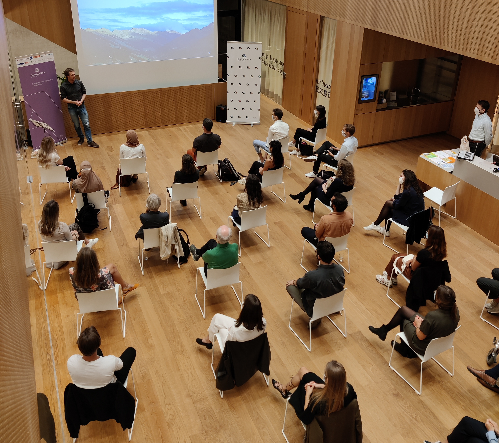

I'm a senior scientist in the Climate Physics group at ETH Zurich working in the frame of the Horizon 2020 project EUCP. My research focuses on the investigation of uncertainties in European climate model projections. I currently mainly work with CMIP5 & 6 on global and regional scale. I also have some expertise in the analysis of atmospheric blocking and I'm passionate about science to public communication and open science.
In my free time I volunteer as board member and president for the Club Alpbach Vorarlberg. We are a non-profit dedicated to enabling dialog between countries, generations, and disciplines. Every year we award scholarships for the European Forum Alpbach to young people with ties to Vorarlberg.
